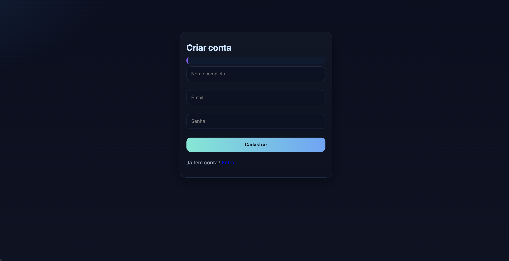
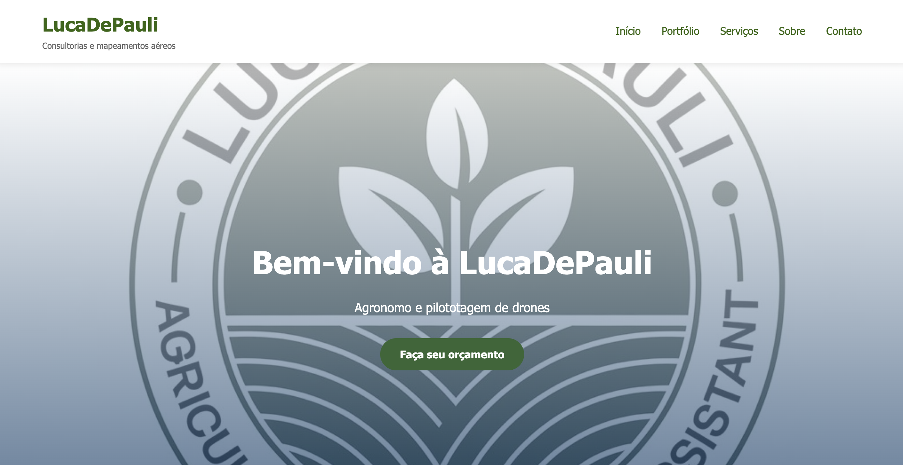

Controle Financeiro
Aplicação web para gerenciamento financeiro pessoal, com controle de receitas, despesas e cálculo automático de saldo. Projeto estruturado com foco em organização de lógica e persistência de dados.
Estudante de Engenharia de Software com experiência em desenvolvimento web (front-end e back-end), modelagem de dados e organização de sistemas. Atuo com Python, C, JavaScript, PHP e SQL, buscando construir aplicações bem estruturadas e escaláveis.
Graduando em Engenharia de Software pela UniBrasil, com experiência prática na UNIDEC Engenharia atuando na organização e análise de projetos técnicos. Tenho direcionamento em desenvolvimento web (front-end e back-end), com interesse em estruturação de sistemas, modelagem de dados e boas práticas de código
Desenvolvimento de aplicações web e sistemas com foco em organização de código, clareza de estrutura e aderência a requisitos técnicos.
Experiência com desenvolvimento front-end e back-end, utilizando linguagens de programação e bancos de dados relacionais.
Evolução contínua em desenvolvimento de sistemas e engenharia de dados, buscando projetos cada vez mais estruturados e escaláveis.
Aplicações desenvolvidas com foco em estrutura, funcionalidade e entrega prática.

Aplicação web para gerenciamento financeiro pessoal, com controle de receitas, despesas e cálculo automático de saldo. Projeto estruturado com foco em organização de lógica e persistência de dados.

Desenvolvimento de site institucional responsivo para cliente real, com foco em identidade visual, organização de conteúdo e experiência do usuário.
Experiência prática aplicada a projetos técnicos.
Experiência com prazos, requisitos técnicos e organização de processos, competências diretamente aplicáveis à construção de sistemas estruturados e bem documentados.
Certificações relevantes para minha formação técnica.
Base para análises, dados e visualização.
Ver certificadoOrganização, fluxo de trabalho e execução.
Ver certificadoCertificações voltadas à engenharia e organização técnica, que reforçam minha base analítica e visão estruturada.
Domínio prático do pacote Microsoft Office (Excel, Word e PowerPoint), aplicado à organização de dados, elaboração de relatórios técnicos e apresentações estruturadas.
Ver certificadoUtilização do AutoCAD Civil 3D na elaboração e organização de projetos de infraestrutura, com foco em modelagem técnica, perfis, seções e análise de dados topográficos.
Ver certificadoUtilização do AutoCAD para elaboração e detalhamento de desenhos técnicos em 2D e modelagem básica em 3D, com foco em padronização, organização de layers e precisão técnica.
Ver certificadoDisponível para oportunidades de estágio, desenvolvimento de projetos e colaborações.